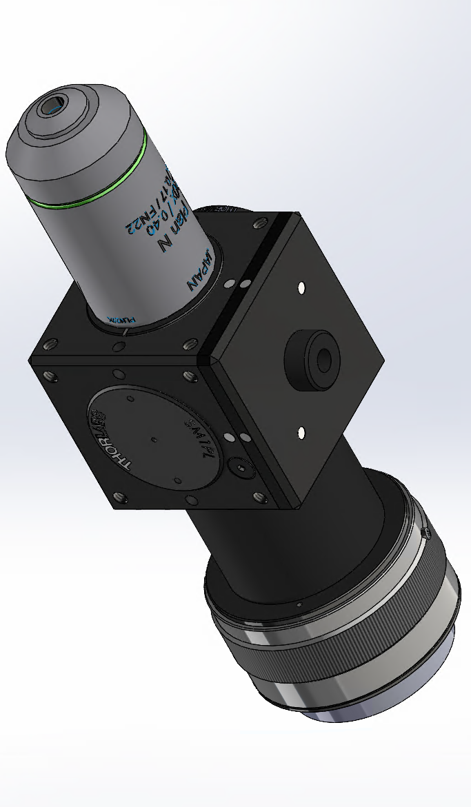

Beam splitting prism enables sensor and display to work on same neuron area

ONI v0 CAD
References
Guo, C., Blair, G. J., Sehgal, M., Sangiuliano Jimka, F. N., Bellafard, A., Silva, A. J., ... & Aharoni, D. (2023). Miniscope-LFOV: A large-field-of-view, single-cell-resolution, miniature microscope for wired and wire-free imaging of neural dynamics in freely behaving animals. Science advances, 9(16), eadg3918.
Kagan, B. J., Kitchen, A. C., Tran, N. T., Habibollahi, F., Khajehnejad, M., Parker, B. J., ... & Friston, K. J. (2022). In vitro neurons learn and exhibit sentience when embodied in a simulated game-world. Neuron, 110(23), 3952-3969.
Grill, J. B., Strub, F., Altché, F., Tallec, C., Richemond, P., Buchatskaya, E., ... & Valko, M. (2020). Bootstrap your own latent-a new approach to self-supervised learning. Advances in neural information processing systems, 33, 21271-21284.